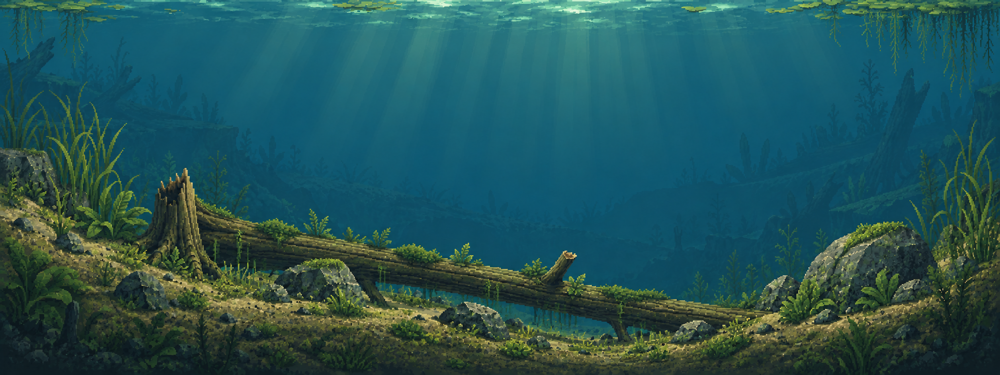
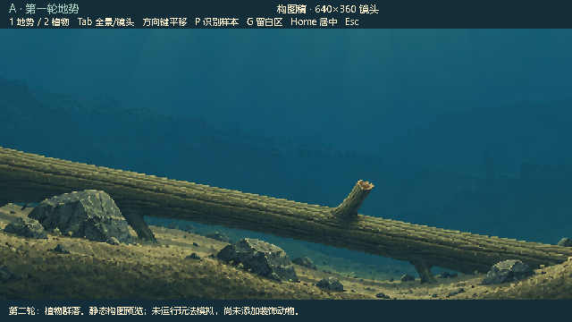
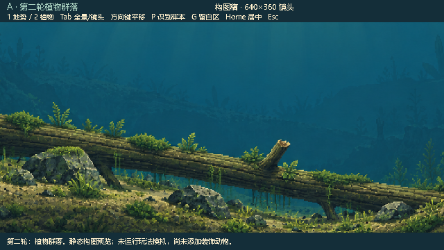

WATERGEN / PLANT COMMUNITIES / ROUND 02
沿着坡脚、木石与浅沟生长。
沿用 A「沟谷倒木」继续第二轮。高草留在两侧，矮草和细藻进入浅沟，苔藻与附生植物贴着木石；顶部两端补浮叶和垂根。中央活动水体仍然连通，这轮尚未加入装饰动物。


第二轮 · 植物第一轮 · 地势
坡脚与石边细长高草、宽叶簇、低矮莲座；丛簇大小与间距不均匀。
倒木与浅沟断续苔藻、附生细叶、短垂藻和地毯藻；木纹与泥地仍可见。
远景与水面低对比剪影拉开距离，浮叶垂根只在顶部外缘形成框景。
同一镜头，前后对照
Godot 原生 640 × 360 画面。识别样本包括现有玩家鱼贴图、固定食物色块、细线和 UI 面板；没有运行玩法模拟。


本轮交付的是静态植物构图与独立预览，植物挂点依据图中的视觉地势。尚未拆为动态植被、独立视差图层，或接入真实生成地图。正式碰撞、饵位、鱼线和 NPC 均未修改。